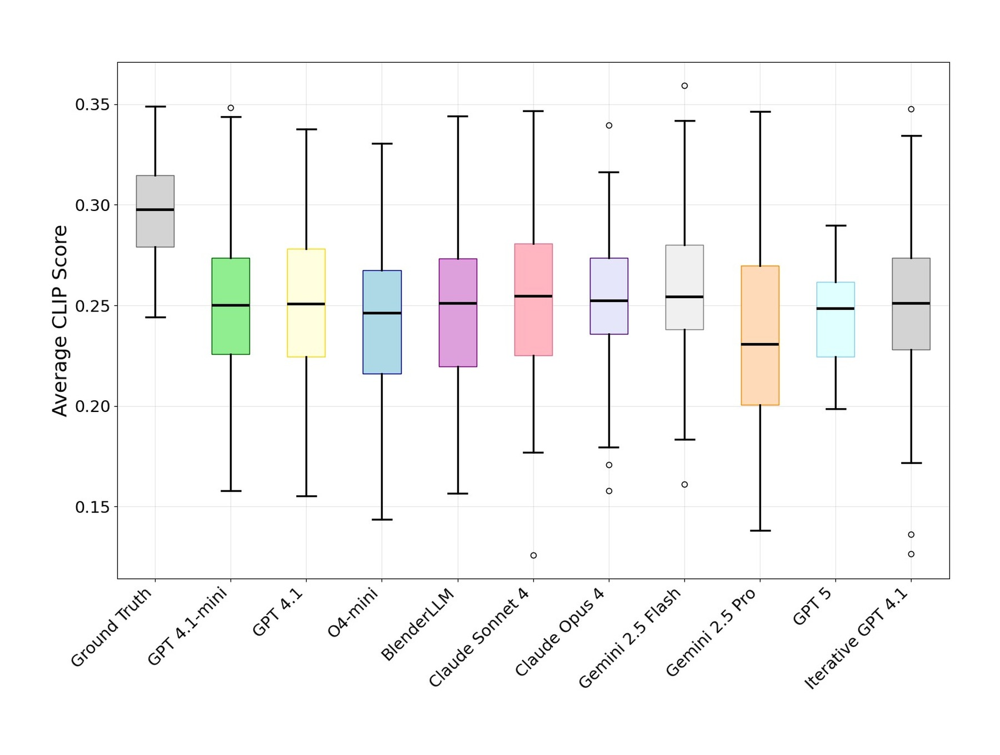
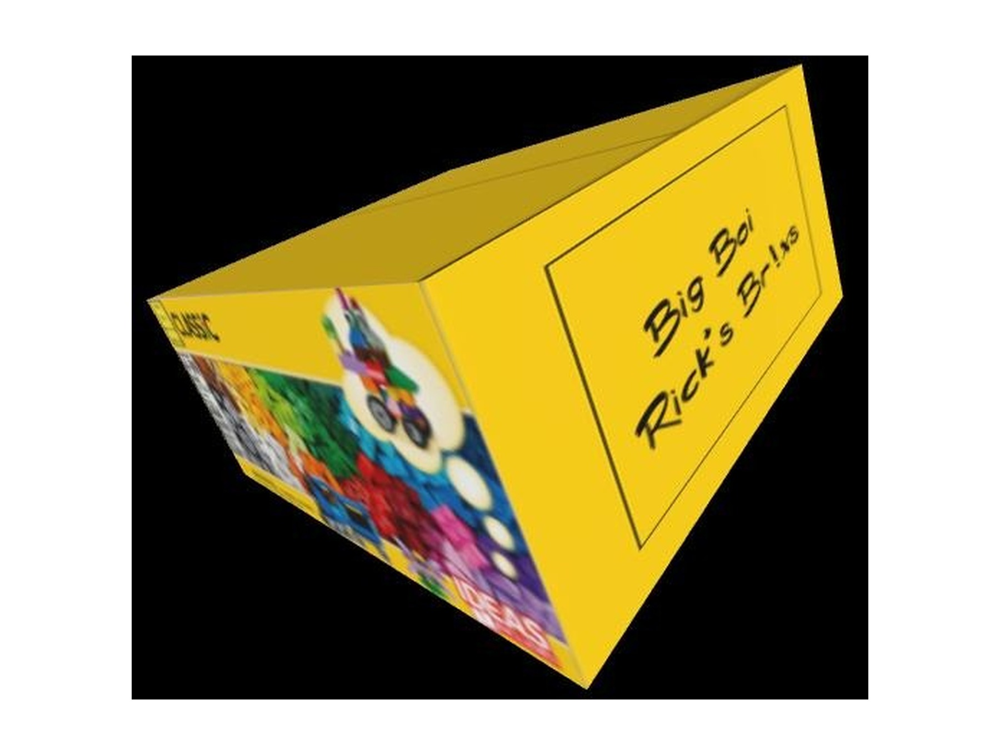
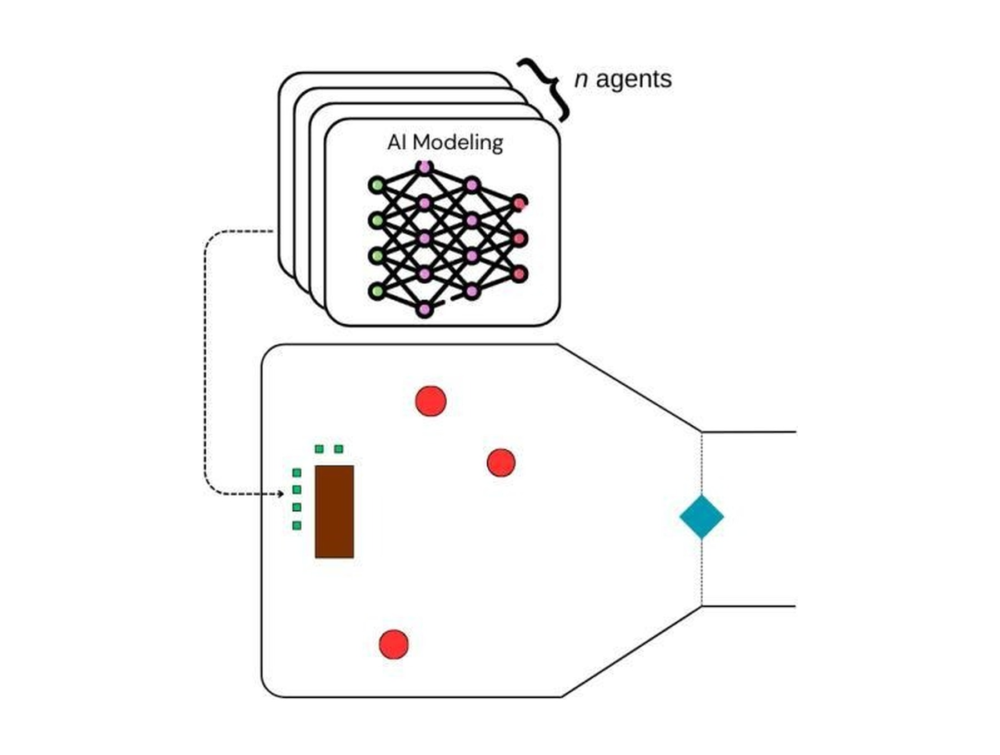
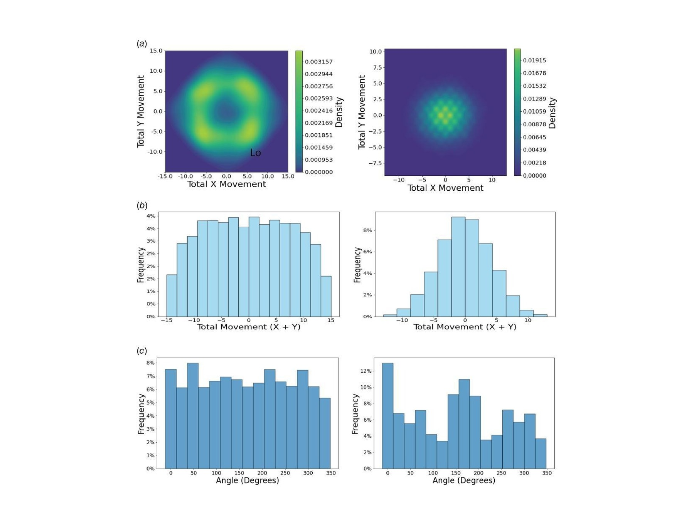
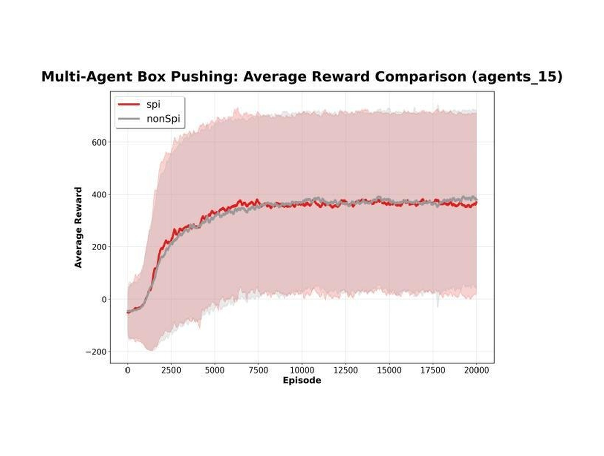
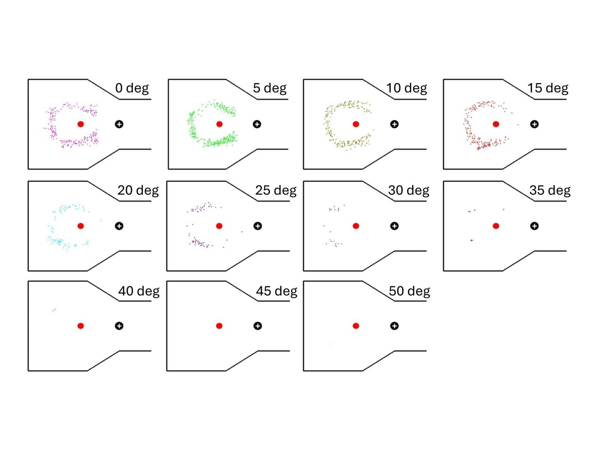
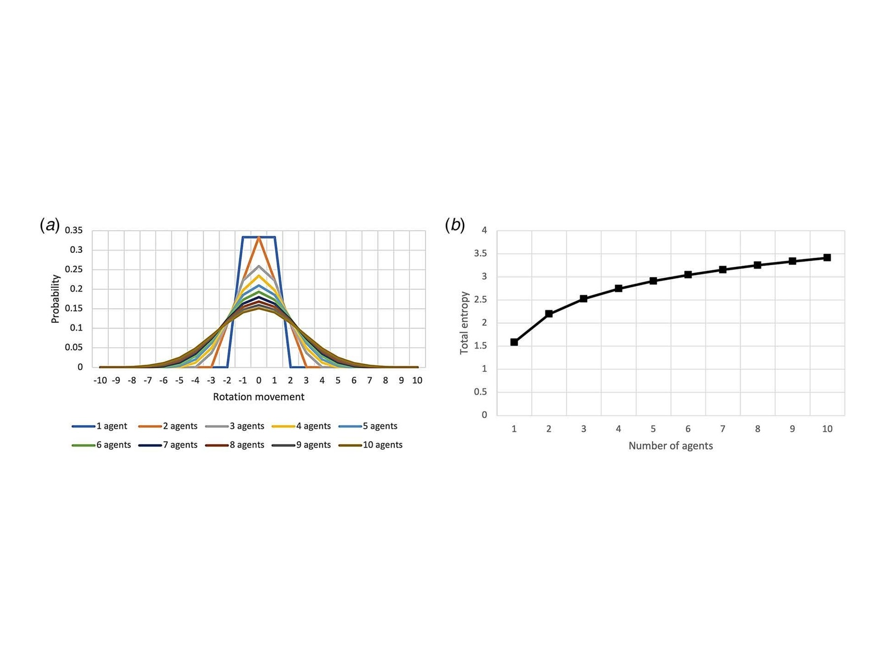
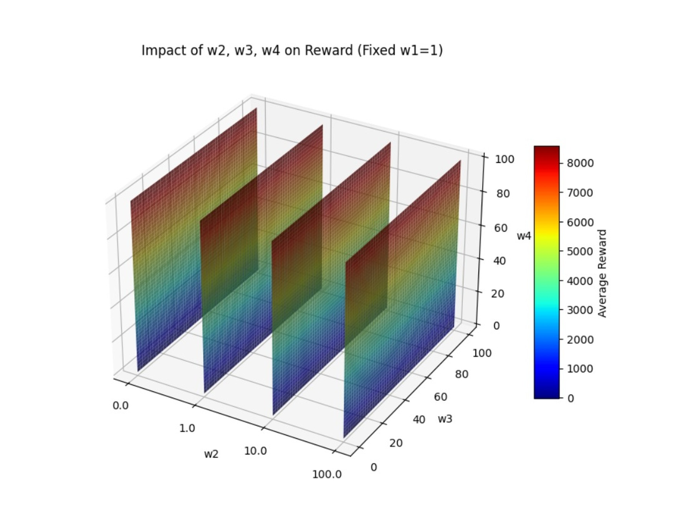
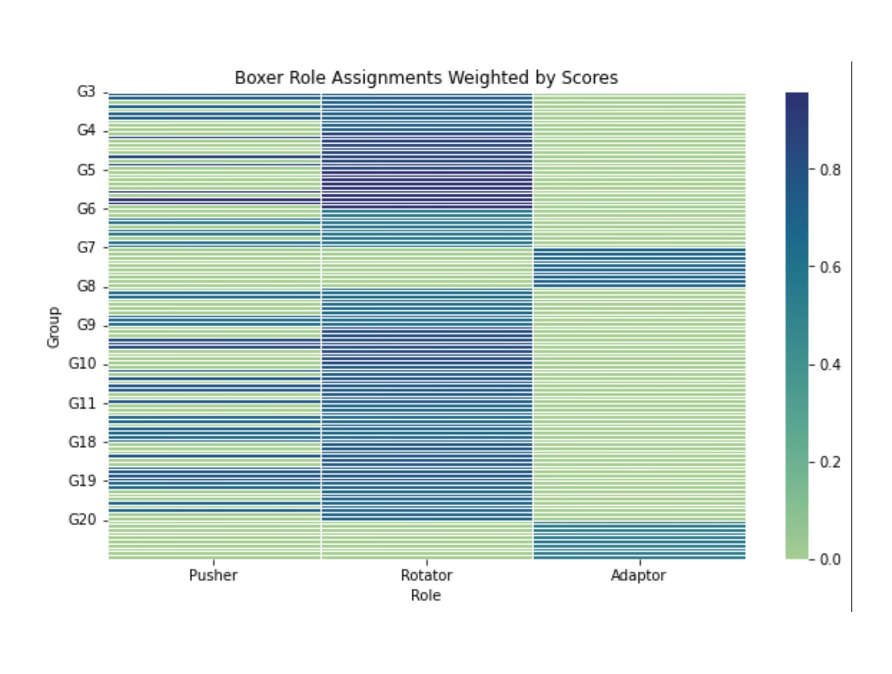
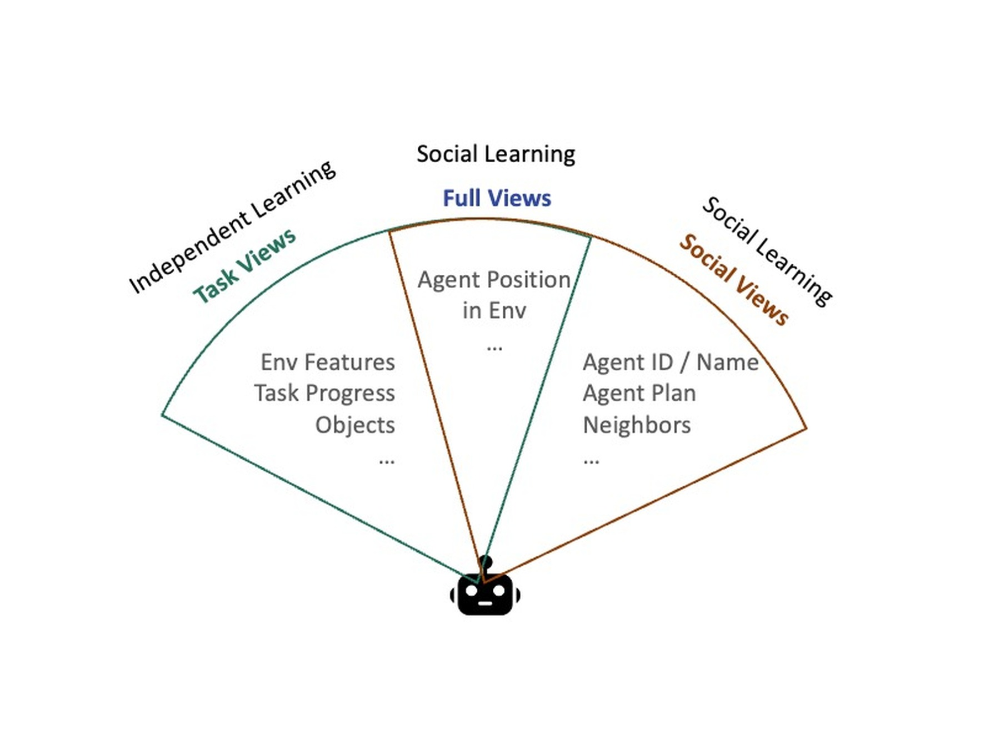

01
USC CARC data science
Applied AI, user support, benchmarking, and research computing workflows for advanced computational research.
Transformer Lab at USC
Transform research into real life. We build intelligent systems across multi-agent learning, large language models, high performance computing, and applied AI, bringing ideas from papers into classrooms, labs, and working systems.










Transformer Lab
Transformer Lab is a home for rigorous ideas with practical ambition. We turn research into real systems: agents that reason and act, models that support discovery, and computing workflows that help people solve difficult problems with confidence.
Students, faculty, teachers, and industry collaborators are welcome to join us. Bring curiosity, patience, and the courage to build. Together we can move AI from elegant theory into tools, prototypes, and public value.
Profile
Dr. Hao Ji is a Data Scientist at USC's Center for Advanced Research Computing and a part-time lecturer at USC Viterbi, where he teaches High Performance Computing in Applied Machine Learning. His work connects AI, scalable computing, and engineering systems, from distributed GPU training and RAG tools for research computing support to multi-agent reinforcement learning for self-organizing systems.
He earned his Ph.D. from the University of Southern California and his master's degree from the University of California at Berkeley. His research has received recognition including the JCISE Editor's Pick Award and a JCISE Journal Spotlight at IDETC 2022, and he has contributed to NSF-funded cyberinfrastructure and hybrid cloud initiatives.
Current focus
01
Applied AI, user support, benchmarking, and research computing workflows for advanced computational research.
02
High performance computing for applied machine learning, with a focus on practical systems and scalable methods.
03
Multi-agent reinforcement learning, self-organizing systems, LLM evaluation, and time series intelligence.
Research
My research interests include game theory, machine learning and AI, time series classification, reinforcement learning, large language models, and high performance computing.
Game theory, social learning, emergent behavior, and self-organizing teams in complex engineering tasks.
Digital twin manufacturing, surrogate models, reward-weight sensitivity, and autonomous workflow development.
RAG for HPC user support, LLM benchmarks for 3D modeling, and code generation evaluation.
Distributed GPU training, HPC system benchmarking, and multivariable time series classification with LLM/CNN methods.
Projects
Autonomy
Manufacturing
Optimization
AI tools
AI Blog
Automated news agent
The Transformer Lab blog follows AI news, technology news, product updates, startup moves, and recent research papers, then publishes a concise digest for students and collaborators.
Open the AI blogLatest digest
The latest AI and tech digest will appear here after the agent runs.
View all postsLatest video
The daily AI video-style briefing will appear here after the agent runs.
View video postsPeople
I work with students across computer science, engineering, and applied AI projects, including LLM evaluation, multi-agent reinforcement learning, research computing support, and autonomous workflow systems.
University of Southern California
University of Southern California
University of Southern California
University of Southern California
University of Southern California
University of Southern California
University of Southern California
Now: Adobe
Now: Master's student at Columbia University
Collaborators
My collaborations connect academic research, applied AI, and industry practice across self-organizing systems, large language models, and intelligent engineering workflows.
California State University, Fullerton
San Jose State University
Industry collaborator
Industry collaborator
Publications
2026
David Ge, Hao Ji, and Bingling Huang. Journal of Computing and Information Science in Engineering.
2026
Hao Ji, K. Aditya, S. Escalante, and Y. Qiu. IEEE Access.
2024
Hao Ji and Yan Jin. Journal of Computing and Information Science in Engineering. Editor's Pick Award of JCISE.
2022
Hao Ji and Yan Jin. Journal of Computing and Information Science in Engineering. Journal Spotlight at IDETC 2022.
2021
Hao Ji and Yan Jin. AIEDAM.
2017
Hao Ji and Yan Jin. Engineering Management Reviews.
2025
Hao Ji et al. ASME IDETC.
2025
Bingling Huang, Maximillian Haaga, and Hao Ji. ASME IDETC.
2024
Bingling Huang, Hao Ji, and Yan Jin. ASME IDETC.
2020
Hao Ji and Yan Jin. Design Computing and Cognition.
2019
Hao Ji and Yan Jin. ASME IDETC.
2018
Hao Ji and Yan Jin. ASME IDETC.
2015
Andrew P. Sabelhaus, Hao Ji, et al. ASME IDETC.
Transformer Lab collaboration
Transformer Lab welcomes research conversations around multi-agent learning, RAG for research computing support, LLM benchmarks, distributed GPU training, autonomous workflow systems, and practical AI tools that can move from research into real life.
CV
Students, teachers, faculty, and collaborators interested in Transformer Lab can reach out by email.
USC Center for Advanced Research Computing and USC Viterbi School of Engineering.
Contact
University of Southern California, Los Angeles, CA.